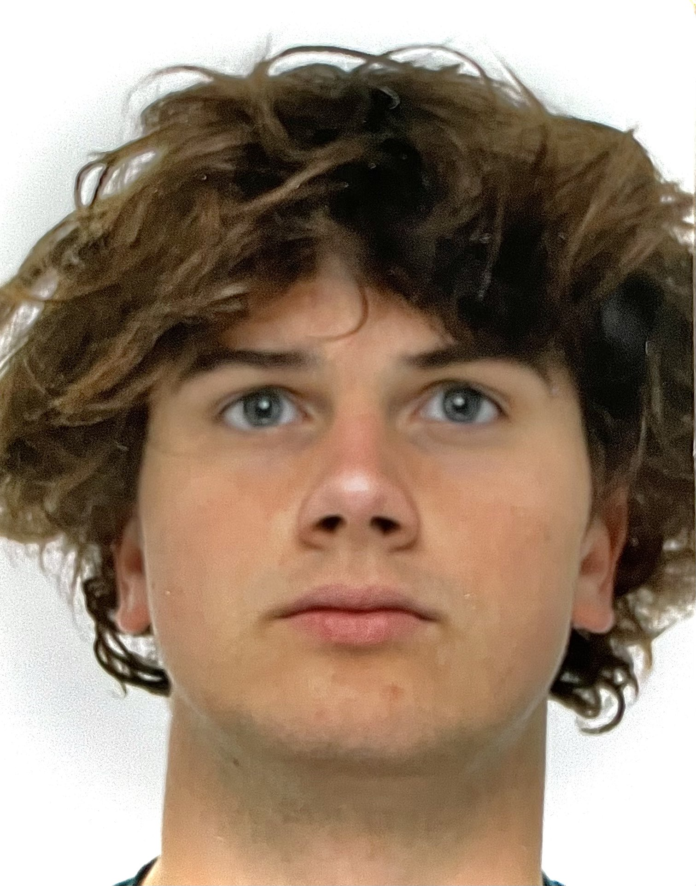

|  |
|
||||||||||||
Computers zijn altijd een van mijn grootste passies geweest. Al van kinds af aan was ik gefascineerd door hun innerlijke werking, maar mijn speciale interesse ging uit naar de werking van softwareapplicaties. Het was hier dat mijn passie voor het ontwerpen en ontwikkelen van applicaties begon, variërend van eenvoudige console-applicaties tot computer games. Hierdoor heb ik mezelf een basis aangeleerd in programmeertalen zoals C#, HTML en CSS. Naast programmeren geniet ik ook graag van mijn vrije tijd met een potje golf. [Herschreven door Chat-GPT]
Mijn middelbare schoolcarrière begon met vier jaar STEM Wetenschappen ASO, maar later maakte ik de overstap naar Toegepaste Informatica TSO. Tijdens mijn vijfde jaar begon ik te merken dat ik niks nieuws aan het leren was en ter gevolg mijn tijd een beetje verspilde. Ik had het gevoel dat ik genoeg kennis had opgedaan om naar het hoger onderwijs te gaan. Daarom begon ik mijn mogelijkheden te onderzoeken om mijn middelbareschooldiploma eerder te bemachtigen.
Na onderzoek kwam ik erachter dat ik via de Examencommissie Vlaanderen mijn diploma vroegtijdig kon behalen. Dit betekende dat ik in mijn eentje alle leerstof van de derde graad moest bestuderen, zonder de gebruikelijke schoolboeken, en vervolgens examens moest afleggen in Brussel. Dit betekende dat ik vaak na schooltijd 's avonds aan het studeren was. Deze uitdaging heeft echter mijn discipline versterkt en me zelfstandiger leren werken. Na vier maanden van hard studeren behaalde ik in juli 2023 mijn secundair diploma TSO via de Examencommissie Vlaanderen. Ik was ontzettend blij en schreef me meteen in voor verdere studies aan de AP Hogeschool Antwerpen.
Op dit moment zit ik in mijn eerste jaar professionele bacheloropleiding in Toegepaste Informatica, met een specialisatie in Software Engineering. In mijn tweede studiejaar ben ik van plan om een minor te volgen in AR/VR, aangezien dit ook een van mijn grote passies is.
Momenteel ben ik druk bezig met de ontwikkeling van een mobiele applicatie die kinderen helpt om hun gevoelens met hun ouders te delen zonder dat ze fysiek hoeven te praten. Mijn applicatie maakt gebruik van kleurcodes en notificaties om ouders op de hoogte te brengen van de emotionele toestand van hun kind, zodat zij de juiste ondersteuning kunnen bieden op dat moment.
Uit eigen ervaring weet ik dat het voor kinderen niet altijd eenvoudig is om met hun ouders over hun gevoelens te praten. Daarom had ik een klein prototype ontwikkeld, die ik effectief heb gebruikt samen met mijn ouders. Mijn hoop is dat mijn applicatie meer jongeren zal aanmoedigen en in staat zal stellen om openlijker te communiceren met hun ouders, waardoor ouders de ondersteuning kunnen bieden voor hun kind.
In de toekomst plan ik ook om een logboekfunctie aan de app toe te voegen, zodat ouders een geschiedenis kunnen bijhouden het kind zich minder lekker in zijn vel voelde. Dit kan hen helpen om verbanden te leggen tussen hun emoties en dagelijkse gebeurtenissen.
Momenteel ben ik bezig met de ontwikkeling van de app voor Apple, waarvoor ik Xcode omgeving en de programmeertaal Swift gebruik. Daarnaast maak ik gebruik van de gratis databaseservice Firebase. Mijn doel is om dit project binnen enkele jaren af te ronden en beschikbaar te maken voor een breder publiek, in de hoop dat het een positieve impact kan hebben op de communicatie tussen ouders en kinderen.